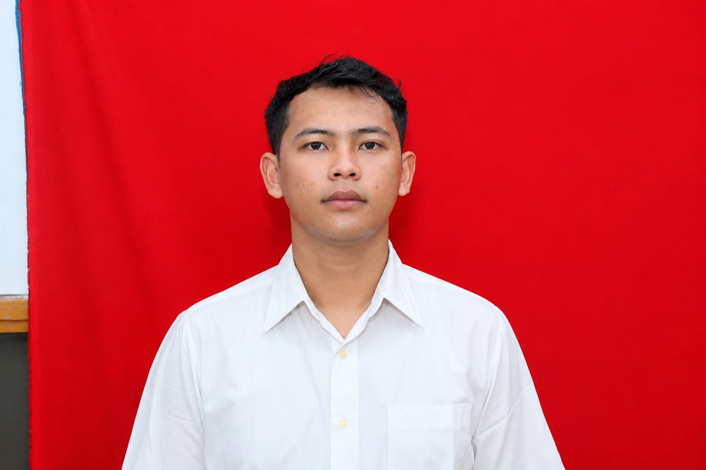
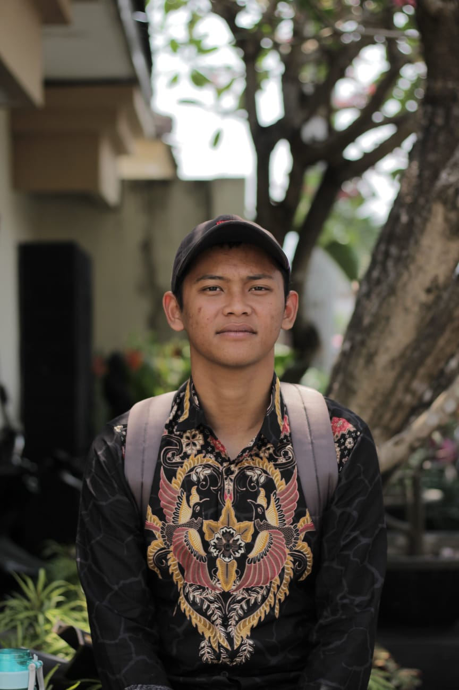
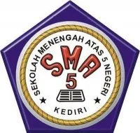
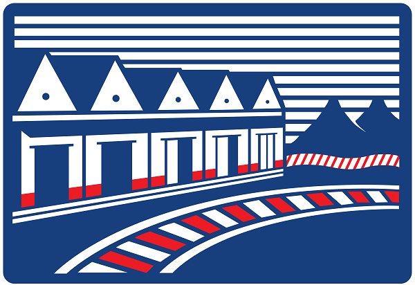
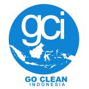
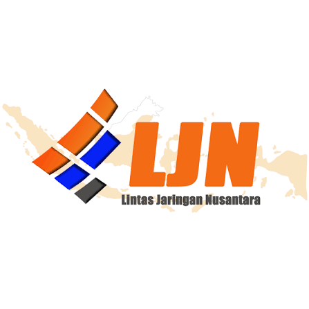

Project Title
Deskripsi pekerjaan akan muncul di sini.
Deskripsi pekerjaan akan muncul di sini.
PORTFOLIO LOADING
Saya Syinka Angga Pramudia atau lebih sering dipanggil Angga adalah Pribadi yang disiplin dan bertanggung jawab, memiliki kemampuan beradaptasi dengan lingkungan kerja baru serta cepat memahami hal-hal baru. Memiliki pengalaman di bidang teknisi lapangan, cleaning service, dan petugas penunjang produksi. Terbiasa mengikuti arahan serta prosedur kerja, dan mampu bekerja secara mandiri maupun dalam tim.



GPA: 81.00
[2016 - 2019]
Selama menempuh pendidikan di SMAN 5 Kediri saya mempelajari semua pelajaran dasar di bindang akademi, untuk lebih spesifiknya di bidang Matematika dan IPA, saya juga aktif menjadi anggota osis semasa sekolah dan turut melancarkan acara" yang di adakan di sekolah terutama membantu sesi dokumentasi dan hubungan siswa.
Aktif mengikuti ekstrakulikuler keolahragaan, mengikuti lomba lomba tingkat kota dan aktif dalam event drumband sekolah hingga provinsi.
Mengikuti berbaga perlombaan keolahragaan dan aktif dalam akademik.
Mengikuti berbagai event Futsal dan Sepak Bola antar SMA,Aktif menjadi anggota Osis dan turut melancarkan acara yang diadakan oleh SMA.

saya bertanggung jawab untuk mengawasi sekaligus mensortir barang hasil produksi sebelum di kemas dan di kumpulkan ke gudang untuk stok penjualan.

turut ikut serta menjaga kebersihan dan kerapian mall supaya para pelanggan mall merasa nyaman ikut memperlancar proses event yang diadakan di mall pada hari tertentu.

saya berkontribusi memperluar jaringan wifi dari output odp sampai ke rumah pelanggan atau konsumen saya juga berkontribusi untuk memudahkan pemasangan dan turut ikut serta menyeting alat" yg terpasang di rumah konsumen atau pelanggan.
Mari terhubung! Silakan hubungi saya secara langsung melalui platform di bawah ini.